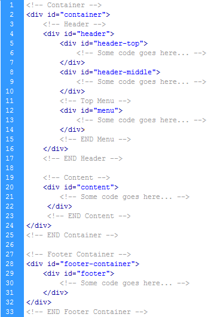
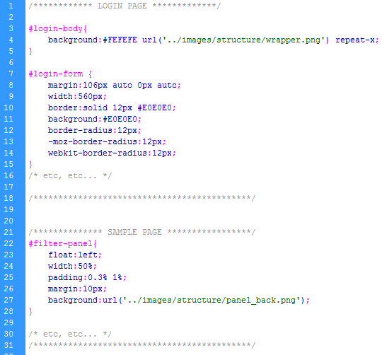

"Real World Admin"
| Created: | 22 Sep, 2010 |
| By: | Weblusive |
| E-mail: | info@weblusive.com |
| Website: | http://www.weblusive.com |
Table of Contents
- Introduction
- General Files Hierarchy
- HTML Structure
- CSS Files and Structure
- JavaScript
- PSD Files
- Sources and Credits
- Known issues
- Mobile Version
1. Introduction
Back to TopReal World admin is a multi-themed administration interface template with fixed and liquid layouts. Every page is designed to be as close to a real-world scenario as possible. The template can be easily extended to suit your specific needs. Throughout all pages an explanation for code is given wherever it makes point. Custom javascript code snippets are also heavily commented. For third party plugins links to official pages as well as documentation pages are provided.
2. General Files Hierarchy
Back to TopFiles Structure
- Real World Admin
- css
- demo-files
- documentation
- images
- arrows
- demo
- icons
- progressbar
- structure
- tooltip
- tree
- js
- Mobile
- PSD
- themes
- assets.html
- dashboard.html
- events.html
- login.html
- page.html
- reports.html
- tasks.html
- themes.html
Description
css
Contains css files common for whole template styling as well as JQuery UI css framework.
demo-files
Contains files used for popup window and context tooltip. The files were moved here because they don't fit into general files category and have no influence on template's structure.
documentation
Contains this documentation and accompanying files.
images
For your convenience, the images folder is divided into 7 subfolders. The folder names are self-documentable. The images in this folder are used for core needs and are the same for all templates. The images specific to a theme are kept in template folders. For more information on this part, See 'template' folder explanation below.
js
all javascript plugins as well as custom developed files reside in this folder.
Mobile
Mobile Version of the template
PSD
The folder contains PSD files for all 3 themes as well as miscellaneous files accompanying them.
themes
Themes files reside here. Generally a theme consists of the following folders and files:
- preview.jpg - theme preview file
- 'css' folder - To override general styles matching theme colors and styles
- 'images' folder - for all theme-specific images
3. HTML structure
Back to TopThe template supports both fixed and liquid layouts with variable quantity of columns. General structure consists of the following parts: Container, which holds header and content sections and footer container which holds footer div. All of the information within the main content area is nested within "content" div. Header section itself contains 3 subsections: header-top, header-middle and menu. The reason to have footer-container wrapping footer div is because we have liquid and fixed layouts. When liquid layout is chosen, thee footer's width extends to 100%, equalling footer-container's width, otherwise it is centered 960px div. The general structure is the same throughout the template. Here is the structure's skeleton demonstration.

If you would like to edit the color, font, or style of any elements in one of these columns, you would do the following:
#menu li a {
color: #someColor;
}
If you find that your new style is not overriding, it is most likely because of a specificity problem. Scroll
down in your CSS file and make sure that there isn't a similar style that has more weight.
I.E.
#menu li#active-item a {
color: #someColor;
}
So, to ensure that your new styles are applied, make sure that they carry enough "weight" and that there isn't a
style lowerin the CSS file that is being applied after yours. A good showcase for css overriding is the templates' structure. Please refer to any of 3 templates' css source code for a working demonstration.
4. CSS Files and Structure
Back to TopThe global styles used throughout template reside in the /css folder. For your convenience, the files are separated into logical parts the following way:
- globals.css: The file is responsible for global element styles like margins, lists, buttons, etc...
- commons.css: The styles specific for pages (like login page, dashboard page, etc...) reside here.
- plugins.css: Here reside the styles for various javascript plugins used in the template. The only exception are css files for MarkItUP and Jqplot plugins which were too specific in my opinion to include them in this file.
- ui-lightness: This folder contains JQuery UI framework and associated files and images. It hasn't been merged into main files intentionally, so in case if you want to create a new theme you can download and use your own JQuery UI theme from official website or roll your own theme (more information on rolling your own UI themes can be found on site http://jqueryui.com/themeroller/).

Themes' structure
Themes are structured the following way:
- themes
- abstract-blue
- css
- globals.css
- commons.css
- plugins.css
- images
- preview.jpg
- css
- clean-grey
- css
- globals.css
- commons.css
- plugins.css
- images
- preview.jpg
- css
- sleek-wood
- css
- globals.css
- commons.css
- plugins.css
- images
- preview.jpg
- css
- abstract-blue
5. JavaScript
Back to TopBelow is the list of javascript files, frameworks and plugins used in the template. All files are licensed under MIT or GPL licenses or their modifications.
| Name | Type | Description | URL | License |
|---|---|---|---|---|
| jquery.js | Framework | jQuery is a fast and concise JavaScript Library designed to change the way that you write JavaScript. | Link | MIT/GPL v.2 |
| cookie.js | Plugin | simplifies read/write manipulations with cookies. | Link | MIT/GPL |
| filterable.js | Plugin | Interactive filtering plugin. I have made some modifications to make it work with dropdown select box. | Link | MIT |
| jquery.cluetip.js | Plugin | An interactive tooltip plugin which I have used on assets page as context window. | Link | MIT/GPL |
| jquery.nyromodal-1.6.2.pack.js | Plugin | Nyromodal is a very customisable multifunctional popup plugin supporting inline content, ajax and much more. | Link | MIT |
| jquery.progressbar.min.js | Plugin | A nice plugin to create colorful animated progress bars. Copyright (c) 2008 Gary Teo* http://t.wits.sg | Link | No License (in Authors words: If its working for you, drop us a comment and tell us where we can see your stuff!) |
| jquery.treeview.pack.js | Plugin | Plugin helps to create hiearchic structures like the tree used in this documentation file | Link | MIT/GPL |
| jquery.uniform.min.js | Plugin | Uniform masks standard form controls with custom themed ones. It works in sync with real form elements to ensure accessibility and compatibility. | Link | MIT |
| jquery.weekcalendar.js | Plugin | A week calendar plugin with events support | Link | MIT/GPL |
| jquery-ui-1.8.4.custom.min.js | Library | jQuery UI is an open source library of interface components — interactions, full-featured widgets, and animation effects — based on the stellar jQuery javascript library . | Link | MIT/GPL v.2 |
| table.js | Plugin | TableDnD plug-in for JQuery, allows you to drag and drop table rows. | Link | MIT/GPL v.2 |
| jquery.tools.min.js | Library | JQuery tools is a compact library which provides many nice plugins. In our case the tooltip plugin was used. | Link | No License (do with code whatever you wish to do) |
| ie6/warning.js | Plugin | A plugin for blocking IE 6 users and suggesting an update to the browser. | Link | MIT |
| jqplot | Library | Jquery plotting library. Helps to create charts with a pleuthora of options and customizations | Link | MIT/GPL v.2 |
| markitup | Plugin | A nice and stable jquery WYSIWYG plugin | Link | MIT/GPL |
| custom.js | Snippets | Jquery Code snippets necessary for site functioning. Everything is well-documented so it should be pretty easy to make modifications if required. | - | - |
6. PSD Files
Back to TopPhotoshop files are provided for the general pages for each theme. The layers are logically named and are groupped. Beside template files, there is also a folder ('misc') where some additional styles are provided. The main structure is shown below.
- PSD
- abstract-blue
- Assets.psd
- Dashboard.psd
- Events.psd
- Login.psd
- Sample Page.psd
- Tasks.psd
- clean-grey
- Assets.psd
- Dashboard.psd
- Events.psd
- Login.psd
- Sample Page.psd
- Tasks.psd
- sleek-wood
- Assets.psd
- Dashboard.psd
- Events.psd
- Login.psd
- Sample Page.psd
- Tasks.psd
- Misc
- Menus and status messages.psd
- abstract-blue
All the photoshop files are well documented and are divided into 3 logical groups: header, body and footer.
7. Sources and Credits
Back to TopExcept the javascript sources provided above, some other sources are used in the template, like icons. The credits go to the sources listed below:
| Type | Name | Source | Additional Notes |
|---|---|---|---|
| icon | Fugue icons | Official Website | Some Icons are Copyright © Yusuke Kamiyamane. All rights reserved. Licensed under a Creative Commons Attribution 3.0 license. |
| icon | Basic Set 2 | Official Website | Beautiful icons set from pixel-mixer.com. The icons are free for commercial use if A link to pixel-mixer.com is provided. Otherwise, consider purchasing a commercial license. |
| icon | Baggy Icon Set | Official Website | Baggy Icons are Free for commercial and non-commercial use. |
| photo | Woman photo | Official Page | The photo was used on tasks' page for member's list. This is a remix of a photo found on flickr. Licensed under Creative Commons Attribution-ShareAlike 2.0 Generic license. |
8. Known issues
Back to TopChrome doesn't support cookies for local files unless you start it with the --enable-file-cookies flag. Though not a catastrophic issue in our case, this functionaltiy is required to save theme and layout preferences of the template. You can read a discussion about it here. If you are having the problem executing AJAX in chrome no matters you are using jQuery, Mootools or core javascript. Just make sure you are not using it in normal html page running fro your local disk. Its chromes security which cancels all AJAX calls on local file storage. Please make sure your code is running on any webserver WAMP, XAMP , ISS or any other. Otherwise all other browsers will render your AJAX calls but chrome will fail to render such calls.
9. Mobile Version
Back to TopThe mobile version is based on brand-new jquery mobile - a Touch-Optimized Web Framework for Smartphones & Tablets. Visit Jquery Mobile Website. All the documentation can be found Here. Please note that the link to documentation page might change when new versions of the library become available so it is better to navigate to main website first.
There are 2 theme files available currently: Default and Valencia. For your convenience the themes styles' files are
copied to /mobile/css folder.
To choose preferred theme file just change the css include file to theme1.css or theme2.css in mobile templates' files.
All these reside in <head></head> section of corresponding html files.
The PSD Files for mobile version have not been created as there is an amazing IPhone GUI also available.
The files can be downloaded here:
Also, don't forget to check for Jquery Mobile framework updates to always have the best version available.